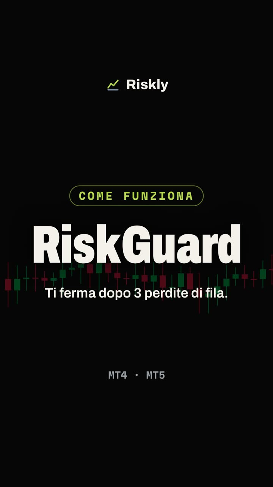

Il mercato non lo controlli. Tutto il resto sì.
Quanto rischiare, quando fermarti, come gestire una posizione aperta. Il trading si decide qui, non nella previsione del prossimo movimento.
Escono i bot per MetaTrader 4 e 5. Ai primi 10 iscritti il prezzo di lancio resta bloccato a vita. Journal, videocorso e calcolatori sono già disponibili.
Blocca il prezzoLa disciplina non è forza di volontà
È un sistema che interviene nei tre momenti in cui i conti si bruciano. Nessuno dei tre riguarda la scelta del trade.
Prima
Decidi a mente fredda quanto rischiare, dove mettere lo stop, quante operazioni al giorno. I calcolatori tolgono la sensazione dall'equazione.
Durante
I bot eseguono quelle regole al posto tuo: gestiscono la posizione, spostano lo stop, e ti fermano quando stai per infrangere i limiti che avevi fissato.

Dopo
Il journal misura tutto. Non se avevi ragione sul mercato, ma se hai rispettato il tuo sistema e quali abitudini ti stanno costando.
Cinque aree, un solo obiettivo
Tenere sotto controllo tutto quello che dipende da te. Nessuno strumento ti dice cosa comprare.
- RischioGratis
Quanto puoi permetterti di perdere
Dimensione della posizione, rischio di rovina, margine residuo sulla challenge, quanto serve per recuperare un drawdown.
- EmozioniDal 23 ottobre
Le regole che non riesci a rispettare da solo
Pausa obbligatoria dopo una perdita, stop dopo N perdite consecutive, limite di operazioni giornaliere. Decidi a mente fredda, il bot esegue.
- PosizioniDal 23 ottobre
Gestite mentre tu fai altro
Break-even automatico, trailing stop, scaglionamento con target diversi. Tutto in pip, valori chiari e configurabili.
- MetodoDisponibile
Imparare prima di rischiare
Videocorso di quasi tre ore, 47 lezioni in dieci moduli: dal position sizing al Monte Carlo, fino alle prop firm. Nessuna strategia, nessun segnale.
- DatiDisponibile
Quello che i numeri dicono di te
Winrate, profit factor, drawdown, performance per strategia e per orario. E i pattern che da solo non vedi.
Nessuno perde il conto perché ha sbagliato previsione. Lo perde perché ha sbagliato a gestire.
Chi c'è dietro Riskly
Sono Gabriele Liberto, trader e sviluppatore. Riskly nasce da un problema mio e di molti colleghi con cui lavoro ogni giorno.
Nel trading il mercato non lo controlli, il rischio sì, ed è l'unica variabile che quasi nessuno gestisce con regole scritte. Sapevo cosa mi serviva per fermarmi al momento giusto, e sapevo scriverlo. Così l'ho costruito.
Non vendo segnali e non prometto rendimenti. I bot sono in test su conto demo MT5: pubblico gli screenshot datati sul canale Telegram.
Gabriele Liberto, ditta individuale, P. IVA 04948840162